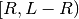
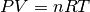

Proyectos finales¶
Como proyectos finales para este corte vamos a simular tres sistemas de partículas diferentes:
El movimiento browniano¶
El movimiento browniano es el movimiento que experimenta una partícula suspendida en un fluido, debido a los choques incesantes de las moléculas que lo componen. Esta partícula es más grande y masiva que las moléculas, y el movimiento que sigue es completamente al azar y siempre continuo, es decir, nunca se detiene.
Para simular este movimiento vamos a seguir estos pasos:
Definir el tamaño de la caja como:
L = 35
Definir el número de partículas como:
N = 40
Todas estas partículas van a representar las moléculas del líquido, excepto una, que es la que va a representar a la partícula que ejecuta el movimiento browniano.
Importar la función random_sample de la librería numpy.random, de la siguiente forma:
from numpy.random import random_sample
Con esta función se generan números aleatorios, es decir, números que no tienen ningún orden distinguible. Con estos números vamos a ubicar al azar las posiciones de las partículas y también les vamos a dar sus velocidades.
Generar las posiciones iniciales con el comando:
p0 = random_sample((N,2))*(L-R) + R
Con él vamos a producir N listas de números aleatorios de 2 elementos, los cuales se encuentran en el intervalo . Se las genera precisamente en este intervalo para que ninguna partícula se intersecte con las paredes de la caja, aunque si pueden intersectarse entre sí.
Generar las velocidades iniciales de las partículas así:
De la librería numpy importar las funciones cos, sin y pi.
Definir v0 como una lista vacía.
Con un ciclo for que vaya de 0 a N, añadirle a esta lista elementos de la forma:
[0.7*L*cos(ran), 0.7*L*sin(ran)]
donde ran es un ángulo aleatorio entre 0 y 2
 , que se
calcula como:
, que se
calcula como:ran = 2 * pi * random_sample()
Finalmente, redefinir v0 para que se convierta en un array y así podamos operar con él en las ecuaciones de Verlet.
Generar las aceleraciones iniciales como:
a0 = np.zeros((N,2))
Este comando genera N listas de ceros con 2 elementos cada una, con lo que representamos que ninguna de las partículas tienen aceleración inicial.
Definir una lista M para guardar las masas de las partículas. Su primer elemento va a ser igual a 10, para representar la masa de la partícula browniana, mientras que todos los demás van a ser iguales a 1, que equivalen a las masas de las moléculas.
Definir una lista r para guardar los radios de las partículas. Su primer elemento debe ser igual a 4, mientras que todos los demás van a ser iguales a R, que siempre lo hemos tomado como 1.
Redefinir la función colision_muros para que dependa de una única variable i, en lugar de pos y vel. Ésta va a corresponder al índice que una partícula ocupa en el arreglo de posiciones.
Dentro de esta función tomar el radio de la partícula a partir de la lista de radios como:
r1 = r[i]
y usar esta variable en las condiciones en que se verifica el choque contra los muros.
Redefinir la función colision_particulas para que dependa de dos variables i y j, con el mismo significado que en el paso anterior.
Dentro de esta función, cambiar además los valores de m1 y m2, que se habían tomado como 1, por:
m1 = M[i] m2 = M[j]
También modificar la condición de choque por:
if d < (r1+r2)
donde r1 y r2 corresponden a los radios de las partículas i y j, que deben extraerse de la lista de radios.
Modificar la aplicación de las dos funciones anteriores en el ciclo for que aplica el algoritmo de Verlet.
Finalmente, para generar la animación con VPython, vamos a seguir estos pasos:
Antes del ciclo for que genera la lista de particulas con vis.cylinder, crear la partícula browniana. Para distinguirla de las demás, hacer que tenga color rojo y añadirle además el argumento:
make_trail = True
para observar su trayectoria durante la animación.
Generar las demás partículas con el ciclo for antes mencionado, pero que vaya desde 1 hasta N. Usar para ello:
range(1, N)
en lugar de:
range(N)
Para que la animación corra más rápido, aumentar el valor de vis.rate hasta 1000.
El gas ideal¶
Con los programas que se han desarrollado hasta el momento también es posible simular un gas ideal. Este es un gas compuesto de un gran número de moléculas de un sólo elemento químico, cuyos choques son elásticos (es decir que conservan energía) y en el que se cumple la famosa ecuación:

En este caso vamos a estudiar el gas ideal encerrado en un recipiente cuya borde superior es móvil. Con ello podremos simular un pistón que reduce el volumen del gas, lo que de acuerdo a la ecuación anterior aumenta su presión.
Para simular este fenómeno vamos a seguir las instrucciones que aparecen a continuación:
Definir una variable LM y hacerla igual a L, el tamaño del recipiente. Vamos a usar esta variable para definir la posición del pistón a medida que avanza la simulación, por lo que no es constante.
Seguir los pasos 1. a 6. del proyecto de El movimiento browniano.
Seguir el paso 9. de El movimiento browniano.
En la función colision_muros cambiar la condición que verifica si una partícula ha chocado contra el muro superior, para que utilice el valor de LM en lugar del de L.
Seguir los pasos 11. y 12. de El movimiento browniano.
Dentro del ciclo de Verlet, también reducir el valor de LM en una cantidad dt por cada paso de tiempo. Esto va a simular la entrada del pistón en el recipiente.
Finalmente, para generar la animación con VPython, vamos a seguir estos pasos:
Redeclarar el valor de LM para que nuevamente sea L.
Definir los muros no como un cuadrado sino como una U, que arranque en (0, L) y vaya hasta (L, L).
Definir una variable piston de forma similar a los muros, es decir como un objeto vis.curve, pero que sólo tenga dos puntos: (0, LM) y (LM, LM).
Dentro del ciclo for que actualiza las posiciones de las partículas, disminuir el valor de LM de la misma forma que se hizo en 6. y actualizar la posición del pistón con el comando:
piston.pos = [(0, LM), (L, LM)]
Para que la animación corra más rápido, aumentar el valor de vis.rate hasta 1000.
El sistema solar¶
Con lo visto en la sección Fuerza de gravedad es posible simular el movimiento de los planetas alrededor del Sol. Para ello vamos a tomar los datos de posiciones y velocidades que provee la NASA de los cuatro primeros planetas: Mercurio, Venus, Tierra y Marte, y los vamos a introducir en el programa que se desarrollará a continuación.
Para simular el sistema solar deben seguirse estos pasos:
Hacer el número de planetas como:
N = 5
Definir el tiempo total de la simulación y el paso de tiempo como:
T = 1 dt = 0.0001
Definir las siguientes variables:
El valor de una Unidad Astronómica:
UA = 1.49597870691e11
Esta es la distancia media de la Tierra al Sol en metros y la vamos a utilizar para transformar todas medidas de distancia a esta unidad. Esto permite que no se manejen números demasiado grandes en la simulación, lo que puede originar errores de redondeo.
El valor real de la masa del sol:
M_sol_real = 1.9891e30
Vamos a usar esta constante para transformar las masas de todas los planetas a la escala de esta masa.
El valor de la masa del sol dado por la tercera ley de Kepler:
M_sol_kepler = 4 * pi**2
Este valor se obtiene al hacer la constante universal de la gravedad G igual a 1, y también se usa para transformar las masas de los planetas a números manejables por el computador.
Definir las posiciones iniciales, de acuerdo a los datos dados por la NASA, como:
p0 = np.array( [[0., 0., 0.], [0, -0.38709893*cos(deg2rad(7.00487)), 0.38709893*sin(deg2rad(7.00487))], [-0.72333199*cos(deg2rad(3.39471)), 0, 0.72333199*sin(deg2rad(3.39471))], [0, cos(deg2rad(.00005)), sin(deg2rad(.00005))], [1.52366231*cos(deg2rad(1.85061)), 0, 1.52366231*sin(deg2rad(1.85061))] ])
Estos datos ya están en unidades astronómicas (UA), por lo que no hay que convertirlos. El primero corresponde a la posición del Sol, y los demás a las posiciones de Mercurio, Venus, la Tierra y Marte, respectivamente.
Definir las velocidades iniciales como:
v0 = np.array( [[0., 0., 0.], [-47872.5, 0., 0.], [0., 35021.4, 0.], [28785.9, 0., 0.], [0., -24130.9, 0.] ])
Estos datos están en km/s y antes de utilizarlos debemos transformarlos a UA/año. Para ello debemos escribir el siguiente comando:
v0 = v0*(<segundos en un año>/UA)
donde en la expresión entre <...> deben introducirse el número correcto de segundos en un año.
Definir las aceleraciones como:
a0 = np.zeros((N,3))
Esto genera 5 vectores con 3 ceros cada uno, lo que implica que se asume que la aceleración inicial de cada planeta es cero.
Definir las masas de los planetas como:
M = np.array([1.9891e30, 3.302e23, 4.8685e24, 5.9736e24, 6.4185e23])
las cuales las vamos a transformar a unidades de la masa del sol mediante el comando:
M = M*(M_sol_kepler/M_sol_real)
En la expresión que calcula la fuerza de gravedad, dentro del ciclo del algoritmo de Verlet, hacer que la fuerza se calcule sólo con respecto al sol.
Finalmente, para generar la animación con VPython vamos a seguir estos pasos:
Después de declarar el objeto escena vamos a declararle las siguientes propiedades adicionales:
escena.width = 625 escena.height = 650 escena.forward = (-0.037, 0.940, -0.338)
El primer comando define el ancho de la escena, el segundo el largo y el tercero el punto de vista desde el que se va a observar.
Declarar escena.autocenter y escena.autoscale como False. Esto impide que VPython auto-centre y auto-escale la escena a medida que corre la animación.
Declarar escena.range como 1.8. Esto define el tamaño de la porción visible de la escena.
Declarar cada planeta por separado y añadirlo al arreglo de partículas, así:
El sol va a ser una esfera de radio 0.12 y color amarillo, lo cual se escribe como:
particulas.append(vis.sphere(pos=p0[0], radius=0.12, color=vis.color.yellow, orbit = vis.curve(color=vis.color.white)))
El comando adicional orbit nos va a permitir dibujar la órbita de los planetas.
Hacer lo mismo para los demás planetas, con los siguientes valores:
- Mercurio: 0.04 y magenta
- Venus: 0.05 y naranja
- Tierra: 0.07 y azul
- Marte: 0.06 y rojo.
Dentro del ciclo for que actualiza las posiciones, añadir la línea:
particulas[i].orbit.append(pos=pos[i])
con la cual vamos a dibujar las órbitas.
Para que la animación corra más rápido, aumentar el valor de vis.rate hasta 3500.